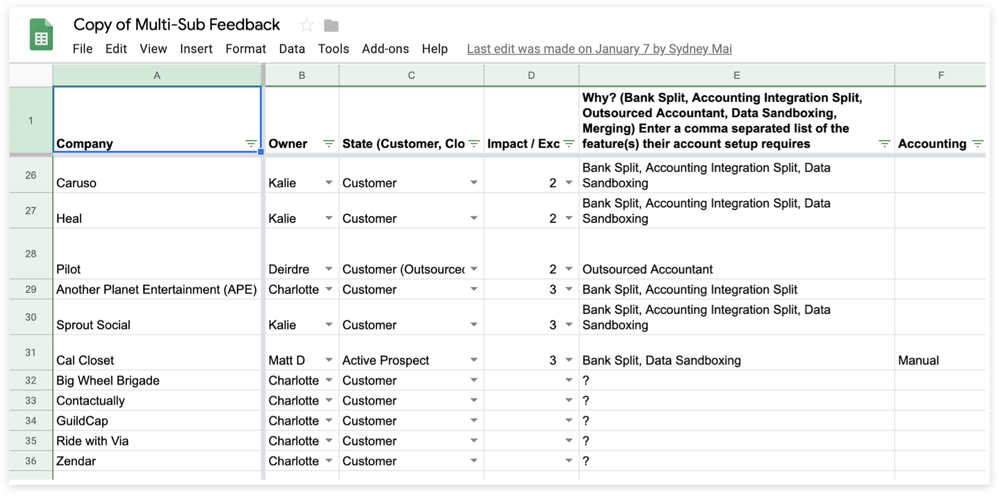
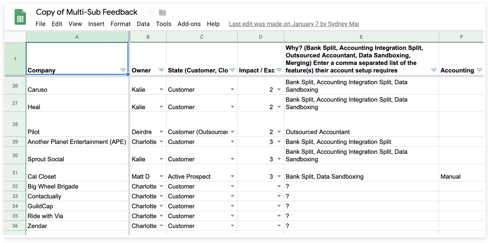
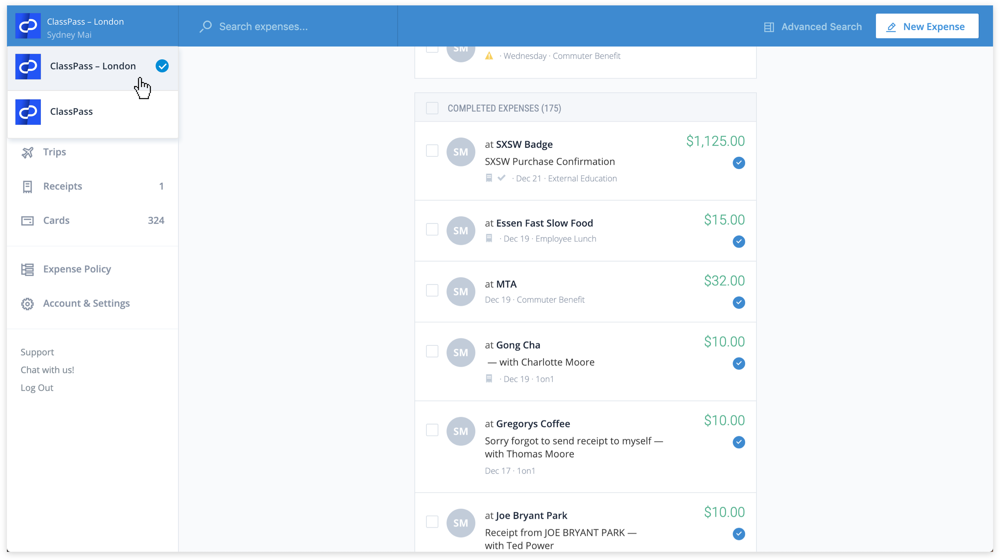
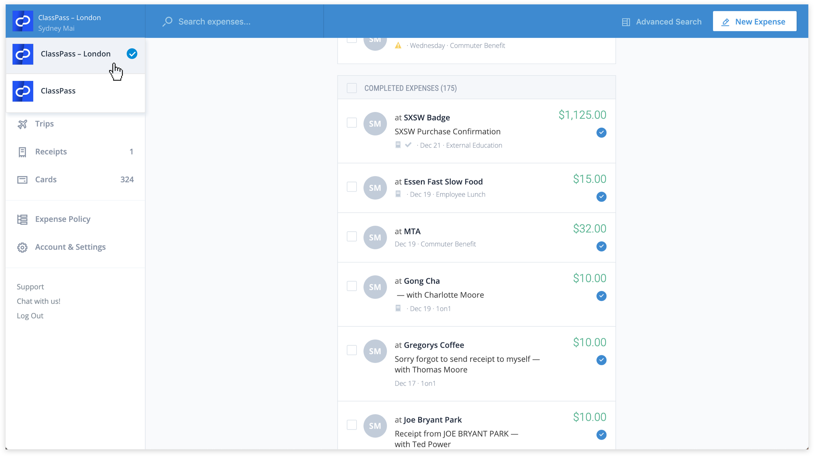

Connected Orgs.
Abacus | May 2018
To accommodate the startup’s growth, I helped Abacus redesign its account management workflow.

To accommodate the startup’s growth, I helped Abacus redesign its account management workflow.
During Abacus’s early years, there was no concept of a subsidiary account. This sufficed for a while since as a young startup, we primarily catered to smaller companies (20–50 employees) with less complicated organizational structure.
To create a subsidiary, companies had to sign up for a entirely new account. There was virtually no in-app connection between these closely related account instances. Users had to log out of their current org in order to log in to another subsidiary. This approach soon became insufficient as we gained bigger clients with clearly defined legal entities within. Their users, especially admins, need a centralized platform to easily switch among entities.
As highly demanded as the feature was, we knew that we couldn’t start roadmapping just yet. Other than account management, there were too many undefined moving pieces associated with this project: corporate cards, receipt management, etc. Building this feature would affect various parts of our data model and in-app workflows.
We felt that we needed further research on our clients’ company structure, admin/employee habits, supportable use cases, etc. in order to build a sustainable feature that would strengthen Abacus’s core. Working with the customer success team, we sent out a survey to 100 clients, hoping that their responses would inform our decisions in scoping in this project.
 
Among what we found:
Informed by our survey responses, we finally laid down some ground work for the feature. I worked primarily on the account management part of the feature, which covers 3 main flows:
The onboarding flow is arguably the most disrupted process with Connected Orgs. Existing users will have to briefly be onboarded to their second org. They will also have to go through a “disambiguation” screen to decide which org they’re logging into. My first task was to redesign the onboarding flow on web & mobile in a Connected Orgs world. This allowed us to see which parts of our user entry flow would require an extra disambiguation step.
My first task was to redesign the onboarding flow on web & mobile in a Connected Orgs world

Org disambiguation is the heart and soul of this project. Users can disambiguate both at login and while in app. Following the onboarding flow rework, my next task was to mock up several states of the disambiguation screen.

 
After initial whitelisting, the feature was launched on June 26, 2018 as an enterprise feature. Read more about the it on our blog post!